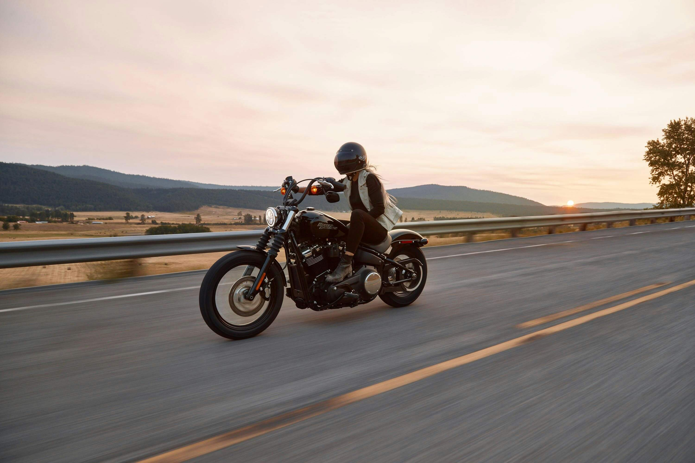
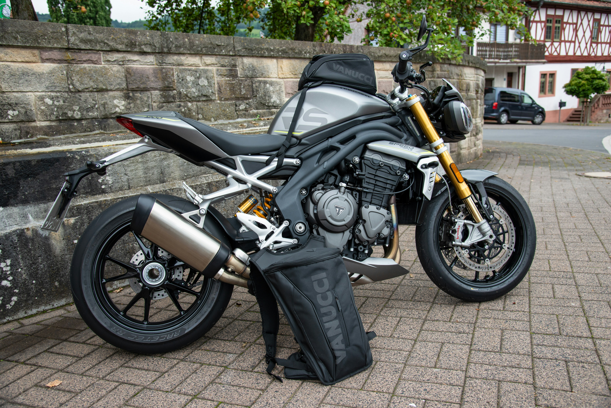
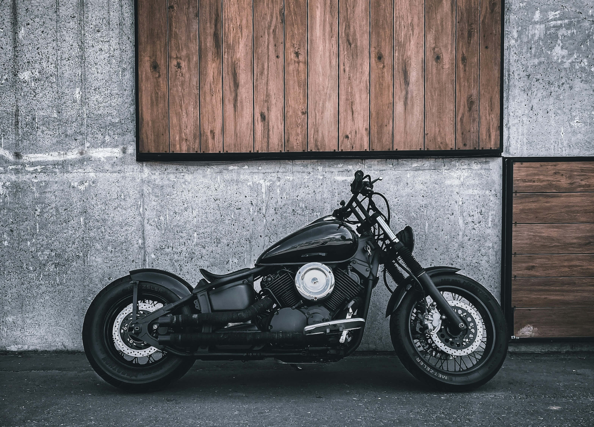
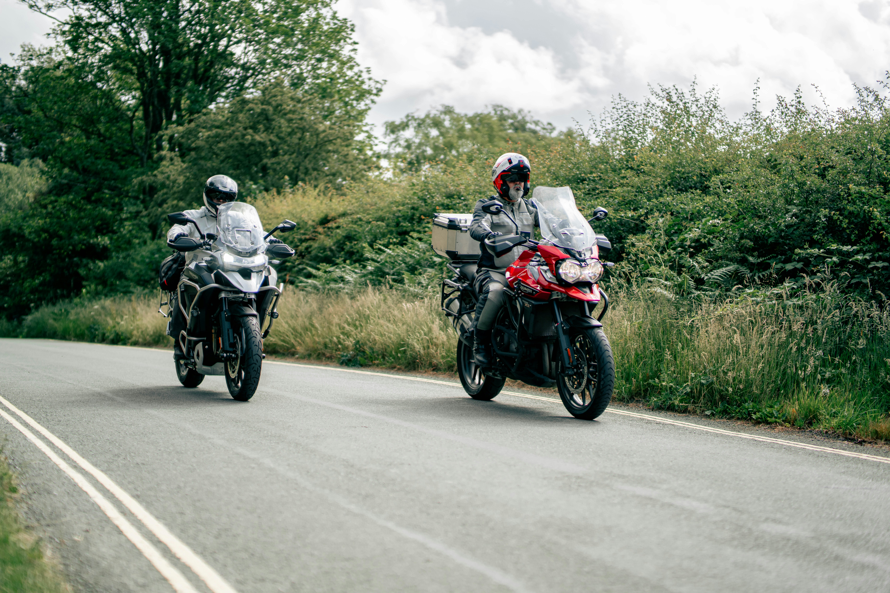
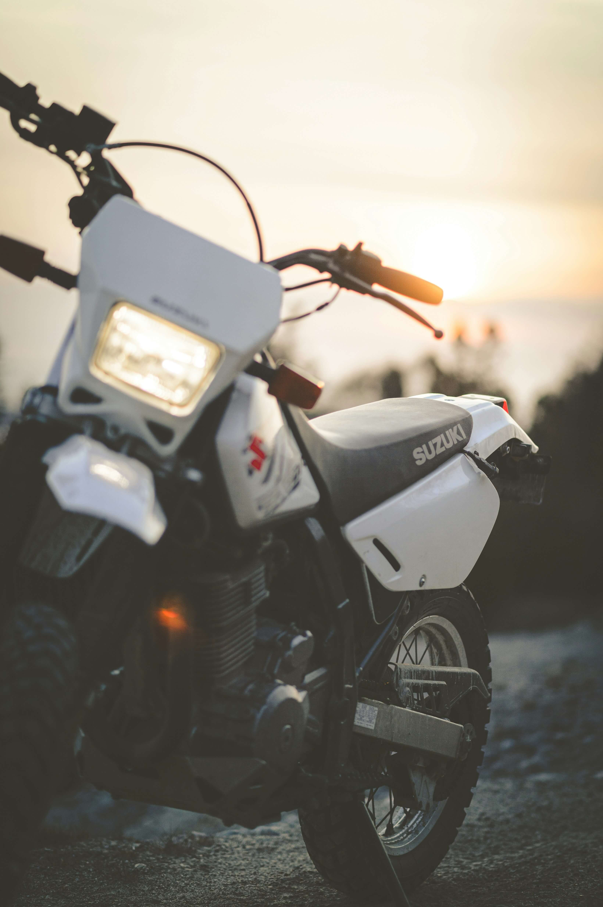

Choosing the Right Motorcycle
No matter what type of motorcycle you choose, it is smart to pick a reliable platform with parts that are widely available. This makes maintenance, repairs, and upgrades much easier.
Motorcycle Type Comparison
| Type | Strengths | Beginner-Friendly Examples |
|---|---|---|
| Sport Bike | Nimble handling, aggressive style, strong top-end power | Ninja 400/500, Yamaha R3, CBR500R |
| Naked Bike | Upright seating, low-end torque, cheaper insurance, less bodywork | Yamaha MT line, Honda CB line, Kawasaki Z line, Suzuki GSX-S line |
| Cruiser | Comfortable street riding, relaxed position, strong low-end torque | Honda Rebel 300, Honda Rebel 500 |
| Touring | Long-distance comfort, storage, wind protection | Smaller sport-touring or lightweight touring models |
| Dual-Sport | Street and light trail use, upright position, versatile riding | Honda CRF300L, Kawasaki KLX300, Suzuki DR-Z400S |

Sport Bikes
Sport bikes like the Ninja 400, Ninja 500, Yamaha R3, and CBR500R are great choices for riders who want a lightweight motorcycle with a more aggressive look.
They are nimble, fun in curves, and usually make more power higher in the rev range. The drawback is that the riding position can be less comfortable for long rides.

Naked Bikes
Naked bikes are more upright and stripped-down relatives of sport bikes. They usually have less fairing coverage, a relaxed seating position, strong low-end power, and sometimes cheaper insurance.
Popular examples include the Yamaha MT line, Honda CB line, Kawasaki Z line, and Suzuki GSX-S line.

Cruisers
Cruisers are great for comfort and street riding. They usually do not focus on top-end power, but they have strong low-end torque that makes them enjoyable around town.
The Honda Rebel 300 and Rebel 500 are popular beginner-friendly cruisers. The Rebel 500 is usually better for highway use because it has more power while still being manageable.

Touring Bikes
Touring motorcycles are built for long-distance comfort. They often include wind protection, larger seats, storage, and a smoother ride.
They can be heavier, so newer riders should be careful when choosing one. The KLR650 is a solid choice if riders want a lot of range when driving. The Versys 650 is also a great option for riders that want more power and a smoother engine as well

Dual-Sport Bikes
Dual-sport motorcycles are designed for both street and light off-road use. They usually have an upright seating position, lighter weight, and good visibility.
They are a good option for riders who want versatility and do not want to be limited to pavement. Some great options looking into for beginners would be the Honda CRF300L, the Kawasaki KLX300, or even the Yamaha XT250.